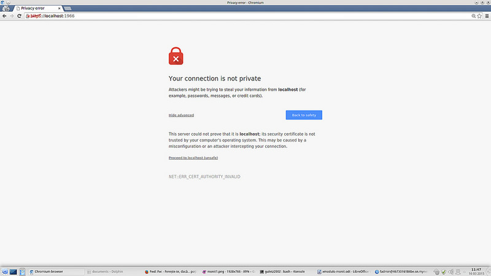
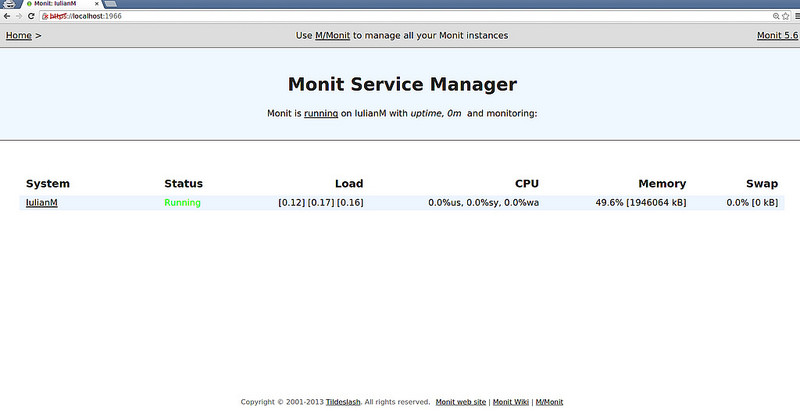

编译自：http://xmodulo.com/server-monitoring-system-monit.html
作者： Iulian Murgulet
原创：LCTT https://linux.cn/article-5542-1.html
译者： goreliu
本文地址：https://linux.cn/article-5542-1.html
很多Linux系统管理员依赖一个集中式的远程监控系统（比如Nagios或者Cacti）来检查他们网络基础设备的健康状况。虽然集中式监控让管理员的生活更简单了，然而处理很多机器和服务时，专用的监控中心显然成为了一个单点故障，如果监控中心挂了或者因为什么原因（比如硬件或者网络故障）不可访问了，你就会失去整个网络基础设备情况的任何信息。
一个给你的监控系统增加冗余度的方法是安装独立的监控软件（作为后备），至少在网络中的关键/核心服务器上。这样在集中式监控系统挂掉的情况，你还有能力通过后备的监控方式来获取核心服务器的运行状况。
Monit是一个跨平台的用来监控Unix/linux系统（比如Linux、BSD、OSX、Solaris）的工具。Monit特别易于安装，而且非常轻量级（只有500KB大小），并且不依赖任何第三方程序、插件或者库。然而，Monit可以胜任全面监控、进程状态监控、文件系统变动监控、邮件通知和对核心服务的自定义动作等场景。易于安装、轻量级的实现以及强大的功能，让Monit成为一个理想的后备监控工具。
我已经在一些机器使用Monit几年了，而且我对它的可靠性非常满意。甚至作为全面的监控系统，对任何Linux系统管理员来说Monit也是非常有用和强大的。在这篇教程中，我会展示如何在一个本地服务器部署Monit（作为后备监控系统）来监控常见的服务。在部署过程中，我只会展示我们用到的部分。
Monit已经被包含在多数Linux发行版的软件仓库中了。
Debian、Ubuntu或者Linux Mint：
$ sudo aptitude install monit
Fedora或者CentOS/RHEL：
在CentOS/RHEL中，你必须首先启用EPEL或者Repoforge软件仓库.
# yum install monit
Monit自带一个文档完善的配置文件，其中包含了很多例子。主配置文件在/etc/monit.conf（Fedora/CentOS/RHEL 中），或者/etc/monit/monitrc（Debian/Ubuntu/Mint 中）。Monit配置文件有两部分：“Global”（全局）和“Services”（服务）。
Monit可以使用邮件服务来发送通知，也可以使用HTTP/HTTPS页面来展示。我们先使用如下配置的web状态页面吧：
之后的步骤，我会使用一个基于Red Hat的系统。在基于Debian的系统中的步骤也是类似的。
首先，在/var/cert生成一个自签名的证书（monit.pem）：
# mkdir /var/certs# cd /etc/pki/tls/certs# ./make-dummy-cert monit.pem# cp monit.pem /var/certs# chmod 0400 /var/certs/monit.pem
现在将下列代码片段放到Monit的主配置文件中。你可以创建一个空配置文件，或者基于自带的配置文件修改。
set httpd port 1966 andSSL ENABLEPEMFILE /var/certs/monit.pemallow monituser:romaniaallow localhostallow 192.168.0.0/16allow myhost.mydomain.ro
然后，我们来设置Monit的邮件通知。我们至少需要一个可用的SMTP服务器来让Monit发送邮件。这样就可以（按照你的实际情况修改）：
有了以上信息，邮件通知就可以这样配置：
set mailserver smtp.monit.ro port 587set mail-format {from: monit@monit.rosubject: $SERVICE $EVENT at $DATE on $HOSTmessage: Monit $ACTION $SERVICE $EVENT at $DATE on $HOST : $DESCRIPTION.Yours sincerely,Monit}set alert guletz@monit.ro
就像你看到的，Monit会提供几个内部变量（$DATE、$EVENT、$HOST等），你可以按照你的需求自定义邮件内容。如果你想要从Monit所在机器发送邮件，就需要一个已经安装的与sendmail兼容的程序（如postfix或者ssmtp）。
接下来就该配置Monit守护进程了。可以将其设置成这样：
如下代码段可以满足上述需求。
set daemon 120with start delay 240set logfile syslog facility log_daemon
我们必须定义“idfile”，Monit守护进程的一个独一无二的ID文件；以及“eventqueue”，当monit的邮件因为SMTP或者网络故障发不出去，邮件会暂存在这里；以及确保/var/monit路径是存在的。然后使用下边的配置就可以了。
set idfile /var/monit/idset eventqueuebasedir /var/monit
现在“Global”部分就完成了。Monit配置文件看起来像这样：
# Global Section# status webpage and acl'sset httpd port 1966 andSSL ENABLEPEMFILE /var/certs/monit.pemallow monituser:romaniaallow localhostallow 192.168.0.0/16allow myhost.mydomain.ro# mail-serverset mailserver smtp.monit.ro port 587# email-formatset mail-format {from: monit@monit.rosubject: $SERVICE $EVENT at $DATE on $HOSTmessage: Monit $ACTION $SERVICE $EVENT at $DATE on $HOST : $DESCRIPTION.Yours sincerely,Monit}set alert guletz@monit.ro# delay checksset daemon 120with start delay 240set logfile syslog facility log_daemon# idfile and mail queue pathset idfile /var/monit/idset eventqueuebasedir /var/monit
现在是时候验证我们的工作了，你可以通过运行如下命令来验证存在的配置文件（/etc/monit.conf）：
# monit -tControl file syntax OK
如果monit提示任何错误，请再检查下配置文件。幸运的是，错误/警告信息是可以帮助你发现问题的，比如：
monit: Cannot stat the SSL server PEM file '/var/certs/monit.pem' -- No such file or directory/etc/monit/monitrc:10: Warning: hostname did not resolve 'smtp.monit.ro'
一旦你确认配置文件没问题了，可以启动monit守护进程，然后等2到3分钟：
# service monit start
如果你使用的是systemd，运行：
# systemctl start monit
现在打开一个浏览器窗口，然后访问https://<monit_host>:1966。将<monit_host>替换成Monit所在机器的机器名或者IP地址。
如果你使用的是自签名的SSL证书，你会在浏览器中看到一个警告信息。继续访问即可。

你完成登录后，就会看到这个页面。

编译自：http://xmodulo.com/server-monitoring-system-monit.html
作者： Iulian Murgulet
原创：LCTT https://linux.cn/article-5542-1.html
译者： goreliu
本文由 LCTT 原创翻译，Linux中国首发。也想加入译者行列，为开源做一些自己的贡献么？欢迎加入 LCTT！
翻译工作和译文发表仅用于学习和交流目的，翻译工作遵照 CC-BY-NC-SA 协议规定，如果我们的工作有侵犯到您的权益，请及时联系我们。
欢迎遵照 CC-BY-NC-SA 协议规定转载，敬请在正文中标注并保留原文/译文链接和作者/译者等信息。
文章仅代表作者的知识和看法，如有不同观点，请楼下排队吐槽 :D
那显然是时区没配对。1来自浙江杭州的 Chrome 47.0|Windows 7 用户 发表于 2016-1-12 20:38 的评论：很好的软件，但是有一个问题请教，邮件发送的时间和真实的时间相隔8个小时，可以在哪里更改吗？
Linux.CN © 2003-2016 Linux中国 | Powered by DX | 图片存储于七牛云存储
京ICP备05083684号-1 京公网安备110105001595
服务条款 | 除特别申明外，本站原创内容版权遵循 CC-BY-NC-SA 协议规定


分享到微信朋友圈
打开微信，点击底部的“发现”，
使用“扫一扫”将网页分享至朋友圈。